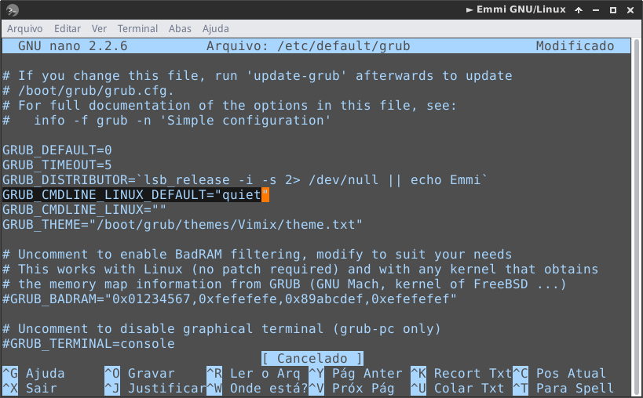

Aumentando e diminuindo brilho da tela
Existem algumas maneiras para fazer este procedimento, vamos ensinar o jeito mais rápido, feito o procedimento a tecla FN vai estar configurada para fazer está ação.
Vamos começar abrindo o terminal, e vamos editar o grub.
Após abrir o terminal rode o comando abaixo:
# nano /etc/default/grub
Procure está linha
GRUB_CMDLINE_LINUX_DEFAULT="quiet"

Agora substitua por está linha:
GRUB_CMDLINE_LINUX_DEFAULT="quiet acpi_osi="
Dê CTRL+O para salvar e CTRL+X para sair.
Após feito isso vamos atualizar o GRUB, rode o comando:
# update-grub
Agora reinicie o seu computador.